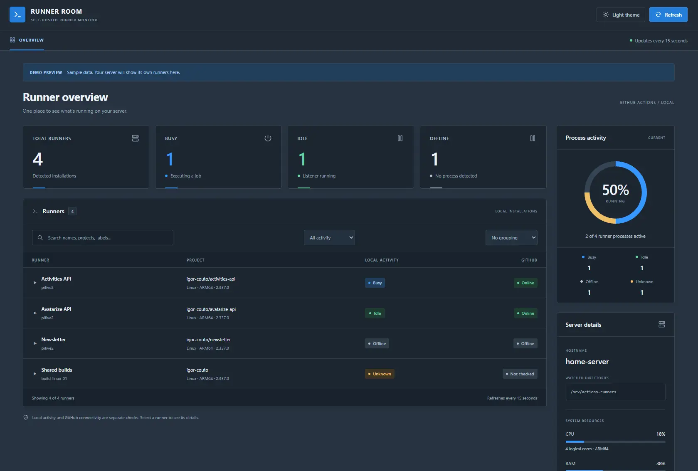

Know what is running
Find busy and idle runners, inspect current jobs, and dig into diagnostic logs. Local monitoring works without a GitHub token.
GitHub self-hosted runner manager
Your runners. Your server.
One clear view.
See what your GitHub Actions runners are doing, understand the machine behind them, and manage them from one dashboard on your own Linux server.
Open source. MIT licensed. Built by Igor Couto.

From homelab to build server
You own the hardware. Runner Room brings its runners, jobs, and health into focus.
Find busy and idle runners, inspect current jobs, and dig into diagnostic logs. Local monitoring works without a GitHub token.
Track CPU, memory, disks, network traffic, and temperatures alongside per-runner resource usage. Keep an eye on your Raspberry Pi or Linux build server.
Register, import, start, stop, drain, and update runners on your host. Enable management through guided setup on a native installation.
Works with GitHub Actions
Connect GitHub to bring workflow runs, jobs, and steps into the same dashboard as your local runners.
Read the integration guideMake it part of your setup
Built for Linux with systemd and glibc, on x64, ARM32 (ARMv7+), and ARM64.
The native installer includes the .NET runtime and sets up a service that starts after reboot. No SDK or Docker required.
Point it at your runner folder, then open the dashboard on your trusted local network. Optional sign-in and roles let you control access.
Arrange widgets, switch themes, or use TV mode for a wall display. Prefer a terminal? A CLI and terminal dashboard are included.
Try Runner Room, suggest an improvement, or help build the next feature.